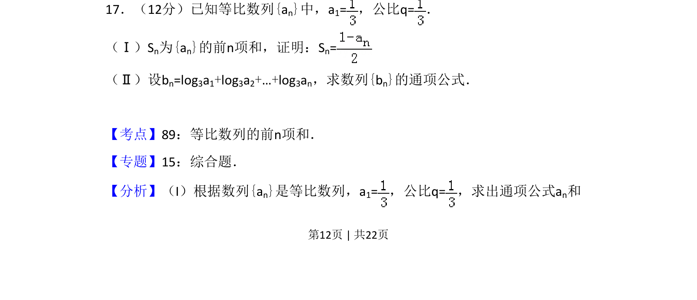
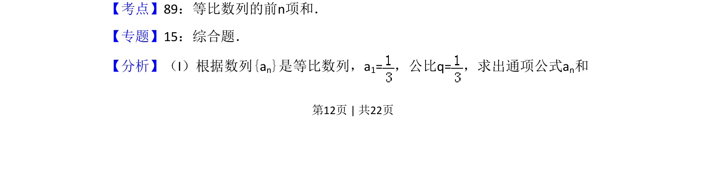
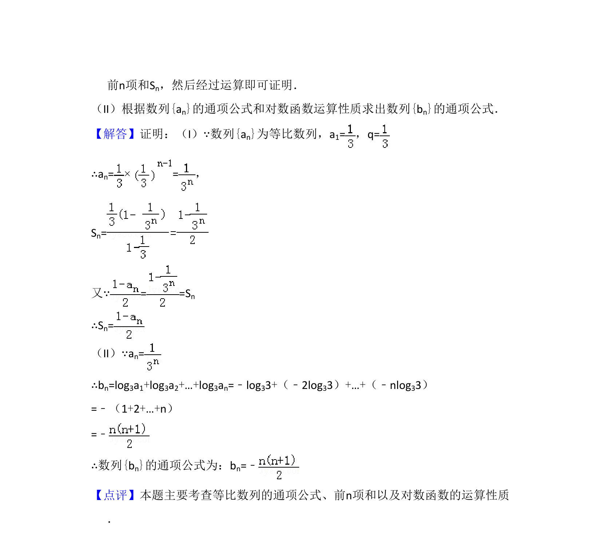

考点：等比数列 前n项和 对数运算 通项公式

考查等比数列前n项和公式的应用及对数运算求通项。


📄 原 PDF 第 12 页：
素材/真题/吉林/2008-2024·（吉林）数学高考真题/2011年高考数学试卷（文）（新课标）（解析卷）.pdf
17．（12分）已知等比数列{an}中，a1=，公比q=． （Ⅰ）Sn为{an}的前n项和，证明：Sn= （Ⅱ）设bn=log3a1+log3a2+…+log3an，求数列{bn}的通项公式．
【考点】89：等比数列的前n项和．菁优网版权所有 【专题】15：综合题． 【分析】（I）根据数列{an}是等比数列，a1=，公比q=，求出通项公式a n和